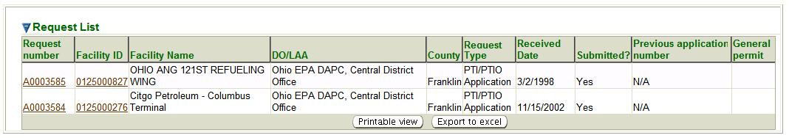

Previous Topic
Next Topic
| Applications |
Previous Topic |
Next Topic |
Application Search is the initial page you see when you select the Applications tab.
However, you may also get to the Applications Search page in the second-level menu from
any page within the Applications tab no matter how you reached that page. This is a standard
search page, as described in Common Search Paradigm.
The Search Criteria and Result List for this search are described below.
In this Help topic, we use the term Application to include all permit applications, notifications or requests (such as Request for Administrative Permit Modification or Permit by Rule Notification).
This topic contains the following sections:
By default, the search criteria are specified to select all applications. You may of course modify these values before you submit your search. The more criteria you are able to specify, the more precise your search will be. Broad searches can retrieve many records that can make it difficult to hone in on the information you are really looking for. If, for example, you submit a search with only the default criteria set, you will get a record for every application submitted for every facility in the entire State of Ohio which has a relationship with the Ohio EPA Division of Air Pollution Control. There are approximately 9,418 such submissions! So, you should try to narrow your search by specifying as many criteria as you can to identify the application you are really looking for.
After you complete the criteria for the search you want, and click on
 ,
the system searches all of the records for all the applications stored in its
database, selects
the ones that meet ALL of the criteria you have specified, and returns
summary information
about those applications in a datagrid. The datagrid below is the result of a search submitted
with search criteria specified to select all Permit by Rule Notifications
for facilities with a partial Facility ID of 0125000 (search criteria = 0125000%),
if they are serviced by the
Central District Office and are located in
Franklin County
,
the system searches all of the records for all the applications stored in its
database, selects
the ones that meet ALL of the criteria you have specified, and returns
summary information
about those applications in a datagrid. The datagrid below is the result of a search submitted
with search criteria specified to select all Permit by Rule Notifications
for facilities with a partial Facility ID of 0125000 (search criteria = 0125000%),
if they are serviced by the
Central District Office and are located in
Franklin County

Applications Search Results Datagrid
The summary data returned includes columns providing Request Number, Facility ID, Facility Name, DO/LAA, County, Request Type, Received Date, Submitted?, Previous application number (if applicable), and the for all the applications that match your search criteria. The following summary data is further explained:
Note that the data in the Request Number and Facility ID columns in the datagrid are hyperlinks. If you click either the Request Number or Facility ID link in the datagrid, the system will take you to the Application Detail or Facility Detail page respectively for the application or facility that the link you selected references.
This datagrid supports all the common functionality for datagrids as described in
Common User Interface Elements - Datagrids
Back to Top
Copyright © 1996, 2004, Oracle. All rights reserved.